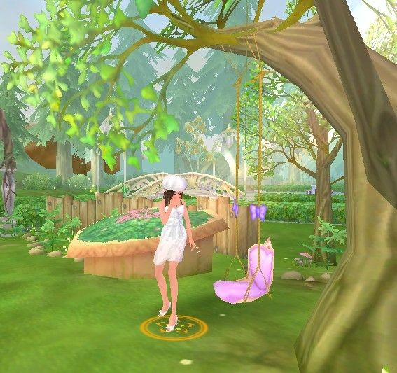

梦之遗迹，雨飘零，心之殇，（叁）
#1 梦之遗迹，雨飘零，心之殇，（叁）作者：蓝天蓝 发表时间：2011-7-21 15:33:41
梦之遗迹，雨飘零，心之殇，（叁）
作者：微笑的娜娜
对芸娜很偏爱，他们确实考入了同所大学，只是不同系而已，她想他们真的可以永远在一起了，她好想听他说“做我女朋友吧？”他说有事情问她的时候，她期待着。
上官轩轩微笑着，脸上挂着她最喜欢的酒窝，白皙的皮肤却不显女性化，柔和的线条勾勒了帅气的脸庞，眼睛如同一汪清潭，看着他的眼睛，芸娜只想沉溺其中。
“芸娜，你好像又漂亮了，我有你这么漂亮的妹妹真是自豪的很呢！”他微笑着道。
“少来了，你又要我帮忙隐瞒阿姨什么事情？”虽然是平时的家常话她却说的心情忐忑。
“怎么会呢，我是那样的人吗？”上官轩轩貌似哥俩好地搂着芸娜的肩膀，以增加话语的可信度。可是却使得芸娜的脸瞬间红了起来，(=@__@=)。。。
“我。。。好像喜欢上了一个女孩，我想和她谈恋爱，你觉得怎样？”
“是你自己的事情，你问我，那她是哪个班的？”芸娜说着不关心的话，却无法压抑心中的期盼，心在这一刻翻滚着。
轩轩拿出手机，打开，让芸娜看屏幕上的女孩，“怎么样，很漂亮吧，人也挺可爱的，”轩轩微笑着看着照片，没有看到，芸娜的脸从红转白，又变成青色。
呆愣，傻傻地站在他旁边，眼睛却没有了焦距，眼泪似乎随时都会流下，之后他说了什么她已听不见，只是心疼的没有知觉，不能，不能在他面前流泪，这样他会知道的，不能，于是她只好咬着自己的下嘴唇，使劲地逼回眼泪，深深的齿痕出现在有些苍白的唇上，努力找回自己的声音，她说道：“对了，我想起有朋友在等我，先走了。”低下头，迅速地转头离开。眼泪在上官轩轩看不到的地方流下。
“这个丫头，什么事情这么着急。”
之后的周末，芸娜刻意躲避着轩轩，不再等在校门口要他载她，不再经常呆在他家比自己家都久，这样的变化，轩轩虽然疑惑却没在意过，毕竟一个女朋友就够他忙的了。
两家的父母虽然很希望关系更进一步，但是孩子们的想法他们也不好掺合，只好顺其自然。不过轩妈妈似乎有些不甘心，总在儿子面前有意无意提起芸娜，“芸娜怎么不来了，是不是你欺负人家了，芸娜好像又瘦了，你去叫她过来，我给她补补。"等等。
不可避免的见面，芸娜无法做到心平气和，只好没事找事吸引自己的注意力，毕竟把目光从他身上移开，是那么艰难，看到他是那么无措。
“我把她只是当妹妹，你要我说多少遍？”气急败坏地声音从上官轩轩嘴中发出，让他对面的女孩吓了一跳，他从来没这么凶过，因为芸娜他却生气了。
“我们分手吧。。。”他很关心她，却不爱她，也许他不知道他总会在不经意时候担心那个他口中的妹妹吃饭没有，天气凉了，她有没有加衣服，甚至在无意中会叫出‘芸娜’这个名字，却不自知。或许分开才是最好的结局，自己早已明白不可能有未来，或许自己可以找到真正爱自己的人。
“我都说了，我们没关系，你要怎么才能相信，要我和她说清楚吗，以后不再理她吗？”他不明白为何女人这么善忌。
小区前面的公园秋千上，芸娜轻轻地摇晃着，眼睛却不曾离开身旁沉默的男人，从出来到现在他只是静静地走着，一句话不说，明明是有话要说的，他的沉默只是在增加芸娜心中的恐惧。
心不安，好像有 #2 Re:梦之遗迹，雨飘零，心之殇，（叁）作者：被感动的人 发表时间：2011-7-21 15:50:03